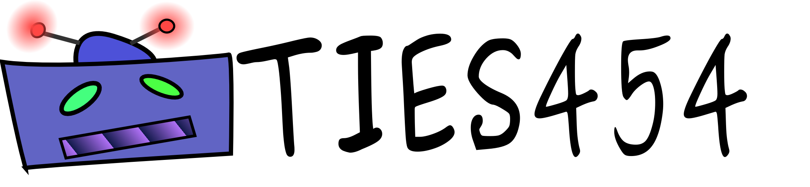

Spring 2016
Agent Technologies for Developers (TIES454).
Final Session
Things we touched upon
Communication
Between agents
Between agents and actuators
Between agents and sensors
Between agents and external services
Language?
Coordination
Finding each other
Managing
agents
external resources
Scheduling tasks
Things we touched upon
Mobility
Agent logic - behavior
Decision making
Classifying
Learning
Optimization
Prediction
Communication Between Agents
Blackboard vs. Messaging
Indirect communication vs. Message passing
Communicating by sharing memory vs. sharing memory by communicating
They are in essence equivalent
Broadcasting
Multi-casting
Publish-subscriber
Robustness
simple retry - failure mechanism
You need to think about the design!
There are O(2^N) blackboards (1 per possible community)
O(N!) channels possible to share information between agents!
Do not allocate them naively
Communication Between Agents and Actuators, Sensors and External Services
Is an external service an actuator or sensor?
Options
You can wrap every sensor and actuator inside an agent which is representing it. SmartResource.
A sensor, actuator can send messages to the agent and vice verse
Sensors and actuators are first class members of the environment.
Agents have direct access to sensors and actuators
Difficult to synchronize access
Calls to sensors might take a lot of time!
Coordination
Finding each other
Directory facilitator (DF)
Yellow pages service
maps between services and providers
Can be pro-active (publish-subscribe)
Usually itself an agent
Managing agents
Agent Management System AMS
Agent logic - behavior
Decision making
Learning
AI/soft computing/statistical models are frequently be used
Neural networks
Genetic Algorithms
Fuzzy Logic
Petri-nets
(Linear) Regression
Belief Desire Intentions (BDI)
Back chaining (start from goal)
Clustering (k-NN, LSH, …)
(collaborative) filtering
Support vector machines
Bayesian networks
Hidden Markov models
…
Where to go from here - What to avoid
Many implementations of agent based systems are merely academic and best avoided (except for research purposes)
Do not use agent based systems where other technology is more appropriate
Systems with a fixed/simple set-up
Systems which do not solve any concurrent problem
Actor based systems vs. Agent Based systems
Software engineering vs. AI
Agents are actors with some specifics
Commitments and goals
Planning
An actor system is in most cases sufficient
Where to go from here - what to use - agent based systems
Cougaar
Military grade
Large scale platforms
Highly-survivable (recovery) and secure
Includes planning
Allows multiple protocols
Loopback, RMI, SSL-encrypted RMI, CORBA, HTTP, JMS, and XMPP (Jabber)
Complex and does not follow standards
Extensive documentation
Java
Open-source
Where to go from here - what to use instead - agent based systems
JADE
Academic but production ready
Still actively maintained
FIPA
complaint
Based on behaviors
Composed dynamically
(Annoyingly) backwards compatible (Java 1.4)
Runs on anything, also on JavaME
Easy to get started
Sufficient documentation
Open-source
Where to go from here - what to use instead - agent based systems
UBIWARE
(developed at JYU)
Mainly academic, but used in industry
Built on top of JADE
Dormant
Integrates agent technologies and semantics
Dynamic management of sensors and actuators
Integrated Beliefs Desires Intention (BDI) storage
Hard to program
Perhaps too many options
Specific agent language called S-APL
Parts Open-source
Where to go from here - what to use instead - actor systems
Languages
Erlang
Scala
Some newcomers
Rust
(changing frequently)
Io
(weird)
Libraries for languages
Java / Scala :
Akka
F# :
MailboxProcessor
Haskell :
Cloud Haskell
Many more exist, see
wikipedia
Go is not an agent based or actor system!
goroutines do not have identity/communication possibilities built-in
But has many similar features
Where to go from here - Reactive manifesto
Reactive manifesto
Characteristics of a reactive application
Responsive
Response time should be independent of load
Scalable
Up and down
Event-driven
Loosely coupled design
Extendable
Maintainable
A counter argument :
Why Events Are A Bad Idea (for High-concurrency Servers)
Resilient
0% downtime
Problems in the application should be isolated
Why is writing concurrent software difficult?
Non-reproducible errors
Different execution paths each time
Who gets there first
Test cases are also themselves concurrent programs
Different way of thinking
Each thread works independently
Between each two consecutive statements, a whole lot of other things might happen.
Shared data
Multiple readers and writers
Possible data corruption
How do you write concurrent software?
Avoid shared data
Use immutable data structures
Use external systems
SQL databases are responsible for data integrity
Message queues
Channels
Publish-subscriber
Use synchronized data structures
Locking
Thank You
Course feedback in korppi